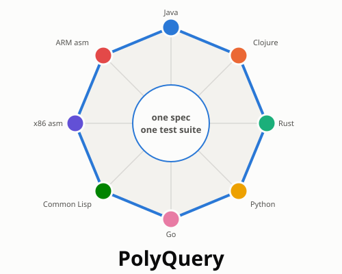
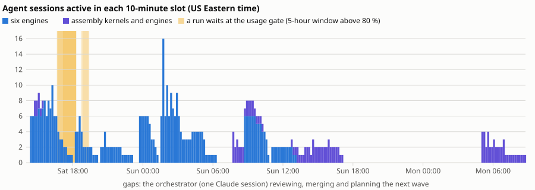

PolyQuery

One spec. Eight languages. One answer.
A VSNC story: Vision, Steps,
News, Contributions.
| Symbol |
The polygon. Eight corners are eight independently
built database engines. The middle is the one specification and test
suite they all answer to. The name says the same thing:
Poly-gon, Poly-glot, PolyQuery. |
| Slogan |
One spec. Eight languages. One answer. |
| Surprise |
An AI wrote a complete SQL database in raw assembly
language, and it beat Java. On the same 1-million-row
benchmark, on the same machine, the x86-64 assembly engine answers in
2.85 ms against Java's 3.41 ms, using half the memory. Both assembly
engines together cost $310. |
| Salient point |
It started with a spec, not with code.
Language-agnostic tests checked every implementation against the same
expected answers, so eight engines could be verified against each
other. |
| Story |
How it was made: one weekend, one conductor, up to
twelve AI agents at a time, a subscription that never went into overage.
Read on. |
V — Vision
Software is expensive because of two hard questions: what exactly
should it do? and how do we know it does that? Typing the
code was never the hard part. Now it is nearly free.
PolyQuery tests a simple vision:
- People write the specification: inputs, outputs,
errors and edge cases, in plain language.
- People turn it into language-agnostic tests:
questions with known answers that any implementation must give.
- AI agents build the implementations, in parallel,
in sandboxes, as many times and in as many languages as we like.
- The tests, and the implementations themselves, check the
result. If independent builds agree, trust goes up. If they
disagree, we've found a bug, or a gap in the spec, before a customer
did.
The test bed was deliberately hard: a complete analytical SQL
database. It includes SQL with joins, grouping and subqueries, a binary
storage format, an HTTP server with concurrency, timeouts and
cancellation, and parallel, vectorized execution. It was built
eight times: in Java, Clojure, Rust, Python, Go and
Common Lisp, then in x86-64 and ARM assembly.
S — Steps (the story of
how it was made)
Step 1: write the spec (Saturday 13:46). A Claude
Code session, "the conductor", wrote the specification first. It
covered:
- the data types and SQL dialect;
- the wire protocol and the storage file format;
- the concurrency rules and the error codes.
It also defined five build phases, from an in-memory engine (Phase 1)
to parallel execution (Phase 5).
Step 2: write the tests, in no particular language.
746 test cases in a plain-text format. Each one is a request and its
expected answer, so any engine can be checked without anyone reading its
code. Part of the suite was kept hidden from the
builders, so passing meant implementing the spec, not memorising the
tests. Expected answers came from the spec and were cross-checked
against SQLite, never taken from another engine.
Step 3: build in parallel.
- The conductor started fresh agent sessions, one per language and
phase.
- Each agent worked alone in a sandbox:
- the spec and the public tests, and nothing else;
- no internet, and no peeking at the other languages.
- The ARM assembly agents ran natively on a separate ARM machine.

Step 4: referee every result. Nothing merged on an
agent's say-so. Every submission was rebuilt from a clean copy and run
against the public and hidden tests.
- Saturday 16:15: all six engines pass Phase 1.
- Saturday 23:21: all six pass Phase 5, under ten
hours after the first commit.
Step 5: stay inside the subscription.
- No new agent starts while the 5-hour usage window is above 80 %.
Instead the run waits for the window to roll forward. On Saturday six
runs waited 35–95 minutes this way.
- A watchdog stops a running agent at 95 %, or instantly on any paid
overage.
- Usage peaked at 89 % of the 5-hour window and 62 % of the weekly
window. All 108 sessions saw "allowed": no rejections, no overage.
Step 6: change it, like real software. On Sunday the
agents got the jobs that come after version 1:
- add a feature (
UNION ALL);
- widen a data type, which also needed a new file format version;
- restructure the planner;
- hunt a planted bug from a vague report;
- make it faster;
- plug in hand-written assembly kernels.
Step 7: go to extremes, then audit.
- Two more engines were built in assembly language and finished every
task the others did.
- Each engine got two independent AI code reviews.
- Black-box probes then tested what the reviewers suspected.
The bill. 108 agent sessions and 75 agent-hours.
That is $1,256 at API list prices, run on a Claude
subscription. A complete, tested engine with all its later changes came
to about $120–180 per language.

N — News
What's the headline? Here are candidates, each backed by the
data. Pick the lead for the audience.
- "AI writes a SQL database in assembly language, and it
outruns Java." The surprise. Best for a broad or technical
audience.
- "Eight database engines in one weekend, for the price of a
laptop." Speed and cost: under 10 hours for six engines through
five phases, and $1,256 at list price for everything.
- "Six strangers, one answer." Six independently
written engines give identical results on every one of 20 benchmark
queries, and each reads every other engine's storage files. This is the
salient point, made concrete.
- "When the robots disagreed, the spec got better."
Divergence between engines exposed two gaps in the specification. One
(huge integers compared with decimals) was flagged independently by two
agents. The other (what to do with gigantic SQL expressions) became
change request CR-6, which is being implemented by the agents right
now.
- "75 hours of AI work, zero overage." Guard rails,
not luck: a usage gate that pauses work instead of raising the
bill.
- "The AI auditors caught real bugs." Independent AI
code reviews flagged suspected defects. Black-box probes confirmed some,
such as a crash on extremely long conditions in both assembly engines,
and cleared others. Every result is published, including the
failures.
- "Next: twin implementations for the numbers that
matter." The same recipe applied to pricing, billing or
interest calculations, with two independent implementations checking
each other on every input.


C — Contributions
What this project gives us:
- A method that works beyond databases: spec first,
language-agnostic tests (some hidden), parallel sandboxed agents, an
automatic referee, and guard rails on spend.
- Twin-implementation verification. For logic where a
wrong number is expensive, build it twice in different languages and
compare every answer.
- When both agree, confidence goes up a lot.
- When they disagree, there's a bug or a spec gap, found early.
- One caveat: keep an independent reference (the spec, or a trusted
system), because two builds that share a misreading of the spec will
agree wrongly.
- Reusable tooling:
- the orchestrator (waves, sandboxes, usage gate, watchdog,
validation);
- the test harness;
- the reporting dashboard.
- Open evidence: every one of the 108 agent sessions
is recorded, with its transcript, cost, time and outcome, failures
included. Live dashboard: https://pgdad.github.io/poly-query/.
Code and data: https://github.com/pgdad/poly-query.
Who contributed:
- The owner set the direction and the budget, and
made the calls: raising the usage gate to 80 %, approving the assembly
stretch goal and its $600 cap, choosing the ARM machine.
- The conductor (one Claude Code session) wrote the
spec, the tests and the tooling. It ran the waves, refereed, and wrote
the reports, and it never touched engine code.
- The agents (108 Claude sessions) wrote about
193,000 lines across eight engines and the assembly kernels.
- Two hands-on interventions in the whole project,
both logged.
One spec. Eight languages. One answer.
Companion version: the full story. Charts
are generated from the experiment data by
tools/reporting/story_assets.py; build.sh
rebuilds both PDFs.